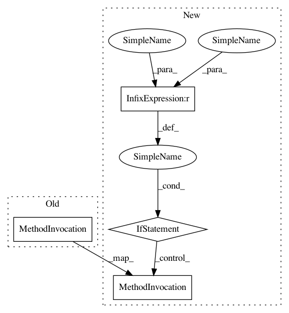

5bb1fce991f89f9459efaaaa8763a5d444f9d865,training.py,,train_epoch,#,9
Before Change
batch_time.update(time.time() - end_time)
end_time = time.time()
batch_logger.log({
"epoch": epoch,
"batch": i + 1,
"iter": (epoch - 1) * len(data_loader) + (i + 1),
"loss": losses.val,
"acc": accuracies.val,
"lr": current_lr
})
print("Epoch: [{0}][{1}/{2}]\t"
"Time {batch_time.val:.3f} ({batch_time.avg:.3f})\t"
"Data {data_time.val:.3f} ({data_time.avg:.3f})\t"
After Change
batch_time.update(time.time() - end_time)
end_time = time.time()
if batch_logger is not None:
batch_logger.log({
"epoch": epoch,
"batch": i + 1,
"iter": (epoch - 1) * len(data_loader) + (i + 1),
"loss": losses.val,
"acc": accuracies.val,
"lr": current_lr
})
print("Epoch: [{0}][{1}/{2}]\t"
"Time {batch_time.val:.3f} ({batch_time.avg:.3f})\t"
"Data {data_time.val:.3f} ({data_time.avg:.3f})\t"
"Loss {loss.val:.4f} ({loss.avg:.4f})\t"
In pattern: SUPERPATTERN
Frequency: 1
Non-data size: 4
Instances
Project Name: kenshohara/3D-ResNets-PyTorch
Commit Name: 5bb1fce991f89f9459efaaaa8763a5d444f9d865
Time: 2019-09-03
Author: kensho.hara@aist.go.jp
File Name: training.py
Class Name:
Method Name: train_epoch